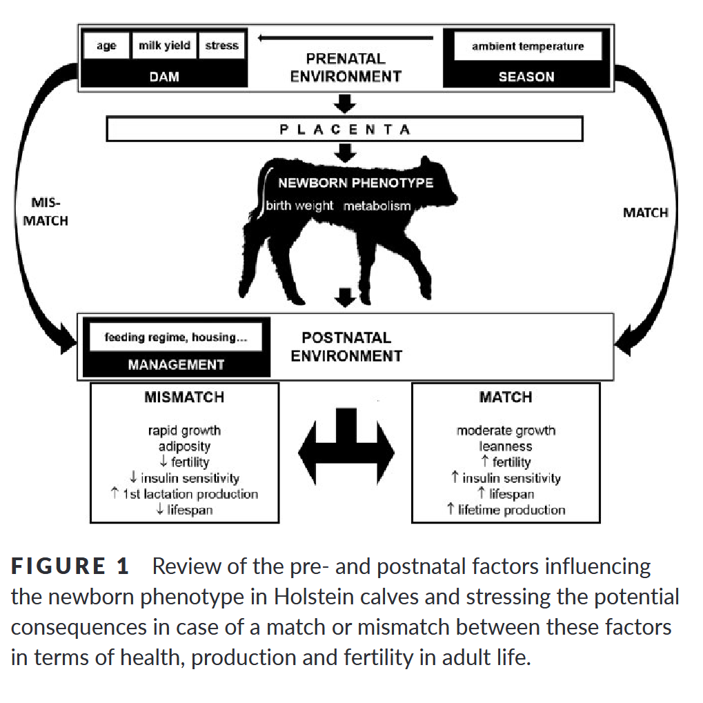

Presentatie bedrijfsopvolgers
2025-11-03
Voorstellen
Inhoud
3 Onderwerpen, allemaal gericht op productie en voerwinst
- Jongveeopfok
- Melkproductie
- Milieudoelen
Jongveeopfok
Doel van opfokperiode zijn goede melkkoeien.
- Wat is goed
- Hoe lang mag het duren
- …
Daarmee, doelen:
- Gewicht bij afkalven: 85% van volwassengewicht
- Leeftijd bij afkalven: 23 maanden
Dan volgt daaruit:
- Geboortegewicht: 45 kg
- Volwassengewicht: 750 kg
- Groei: 0.845 kg/dag.
Belang van goede groei
Algemene gedachte: hogere groei tijdens opfok positief voor latere productie:
| Melkpoeder | Magere Melkpoeder | |
|---|---|---|
| Gewicht (kg) | ||
| 150 d | 144 | 147 |
| 300d | 248.6 | 256 |
| 450d | 355 | 369 |
| 600d | 464 | 485 |
| Leeftijd eerste AI (d) | 452 | 426 |
| Leeftijd dracht (d) | 476 | 446 |
| Leeftijd afkalven (d) | 750 | 705 |
| Productie eerste laktatie | ||
| Melk (kg/dag) | 30.4 | 30.7 |
| Vet (%) | 3.56 | 3.61 |
| Eiwit (%) | 3.06 | 3.14 |
Bron: Moallem e.a. (2010)
Verband is echter lastiger:

Groei en productie uit verschillende studies
Bron: Gelsinger, Heinrichs, en Jones (2016)
Gezondheid van kalveren doet er toe


Bron: Bach (2011)
Opmerkingen
Er moet een match zijn tussen groeiomstandigheden moeder en kalf:
Afstemming moeder-kalf
Bron: Van Eetvelde en Opsomer (2017)
Afstemming moeder-kalf
- Hoge productie, of andere suboptimale omstandigheden zorgen voor lage IGF-1 en insulinespiegels in moeder
- Dit compromitteert groei kalf in baarmoeder
- Kalf compenseert dit na geboorte door hogere gevoeligheid voor insuline, hardere groei
- Dit leidt tot vettere vaarzen, en later tot lagere insulinegevoeligheid, ketose, in koeien
Trapmodel
We hebben gezien dat maximale groei niet altijd goed is. Een interessant idee is het trapmodel:
Trapmodel
Trapmodel
| Controle | Trapmodel | |
|---|---|---|
| Groei (g/dag) | 0.78 | 0.89 |
| DS opname (kg/dag) | 11.4 | 9.4 |
| Groei efficientie (%) | 7 | 9.4 |
| Productie lakt 1 | ||
| Melk (kg/dag) | 24.7 | 30.1 |
| Vet (%) | 3.16 | 3.07 |
| Eiwit (%) | 2.98 | 3.08 |
| Productie lakt 2 | ||
| Melk (kg/dag) | 25.7 | 29.6 |
| Vet (%) | 3.77 | 3.65 |
| Eiwit (%) | 3.12 | 3.08 |
Bron: Ford en Park (2001)
Trapmodel en weidegang?
- Is dit wellicht één van de voordelen van weidegang bij jongvee?
- Daarnaast, beweging zorgt ook voor betere botontwikkeling bij jongvee:
| Sprints/week Moment | Weerstand buigen (x\(10^7\texttt{N mm}^2\)) | Breekkracht (N) |
|---|---|---|
| 0 sprint | 9.66 | 2.3 |
| 1 sprints | 10.4 | 2.6 |
| 3 sprints | 10.8 | 2.4 |
| 5 sprints | 10.2 | 3 |
Bron: Logan e.a. (2019)
Opfok: monitoren
App opfok:
- Geboortegewicht
- Volwassengewicht
- Leeftijd bij afkalven
- Gewicht bij afkalven
- Individuele kalveren
- Groei over tijd van groepen
- Groei in grafiek met doelen
Productie
Productie belangrijk voor (voer)winst. Voerwinst (IOFC) is melkprijs * melkproductie - totale voerkosten
Wat hebben we nodig voor hoge productie:
- Goede opfok. Opfok belangrijk voor latere productie en gezondheid
- Goede transitie
- Veel nutriënten
- Goede gezondheid
Opfok
Gezonde koeien (uiergezondheid, wellicht klauwgezondheid) - Koe beschikt over veel glucose (vrij technisch) - Resultaten Alex BAch
Winst
Omzet is niet direct winst. Daarom IOFC.
- Wat helpt voor lage voerkosten: weinig toevoegingen
- Veel en goed ruwvoer
- Weinig verlies in de kuil en restvoer niet verloren (conserveirng kuil, uitkuilen, ..)
- Efficiëntie koeien (lage DIL, voerefficiëntie)
- Efficiëntie omzetting (geen stress, hoge opname, weingi verliezen ook bij koeien)
- Lage kosten in andere sectoren (jongveeopfok, droogstand)
Milieudoelen
- Ruwvoer telen met weinig N
- Veel ruwvoer van land halen
- Weidegang
- Benutting najaarsgras
- Kuilen met veel DVE, weinig OEB